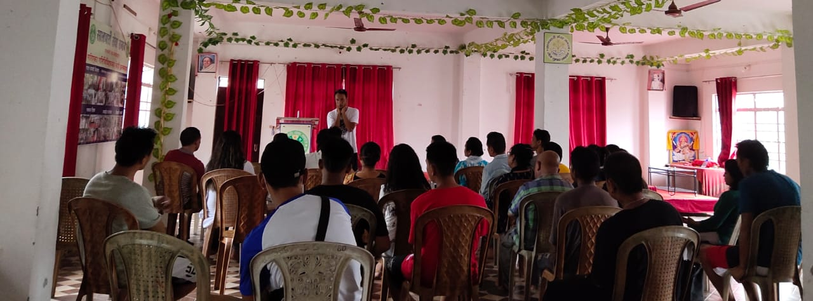

Goodwill
Rehabilitation
Goodwill Rehabilitation is dedicated to empowering individuals struggling with addiction to achieve lasting recovery. We provide comprehensive treatment programs in a supportive and compassionate environment, fostering hope and rebuilding lives.
Rehabilitation
Withdrawl Support
Self-help group
Self Employment

+ About

Established in 2008, Goodwill Rehabilitation Center in Siliguri offers hope for those struggling with addiction. Our team's personal experiences with recovery fuel their passion to guide others towards a life free from drugs and alcohol.
More About Us ++ Treatment

With almost a decade of empirical studies, we have learnt that substance abuse of any manner affects manifold areas of the person; hence, the approach towards healing and total integration of the person has to be manifold as well.
Our Treatment Plan ++ Our Support
Goodwill Rehabilitation Centre understands the impact addiction has on families. We believe in a holistic approach to recovery, and therefore, actively involve families in many aspects of our treatment programs. This empowers families to gain a deeper understanding of addiction and develop healthy coping mechanisms. Together, we can work towards a brighter future for both the recovering individual and their loved ones.
Learn More ++ Interated Tech

At Goodwill Rehabilitation Centre, we embrace innovation. We're exploring the use of Artificial Intelligence (AI) to bolster our treatment programs. AI's potential for analyzing client behavior patterns allows for personalized interventions and targeted support. This integration aims to not only enhance recovery effectiveness but also empower clients with a deeper understanding of their journey.
Talk to Fiona +